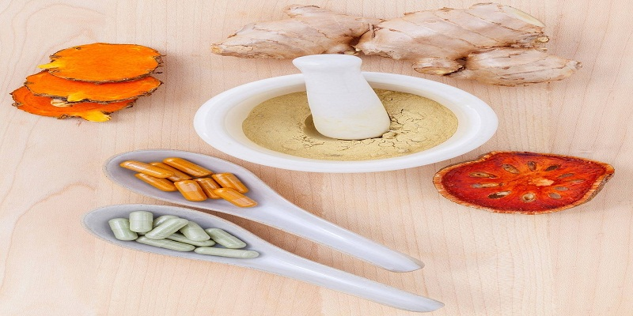
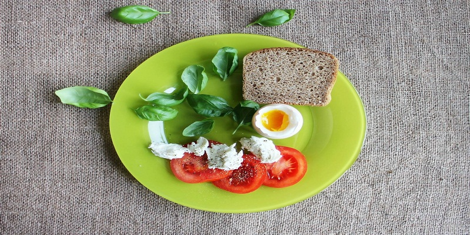
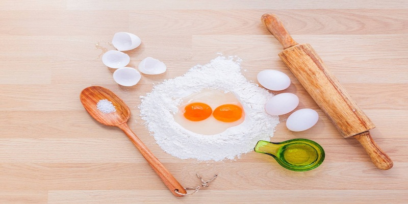
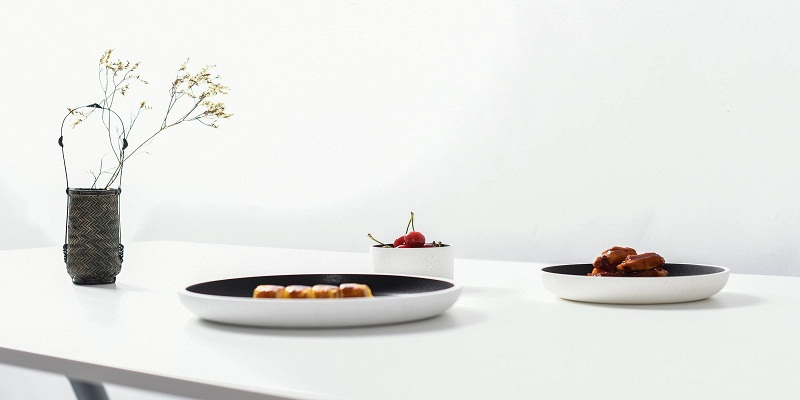
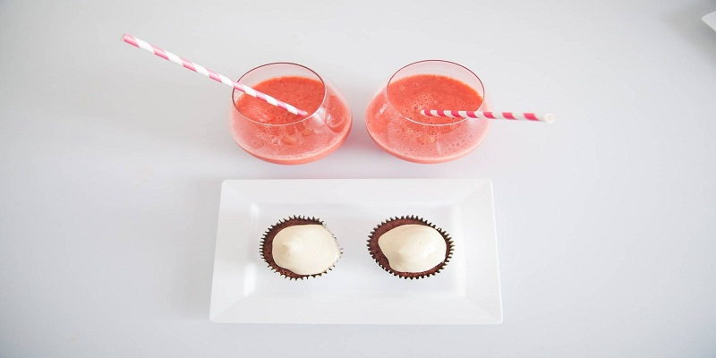
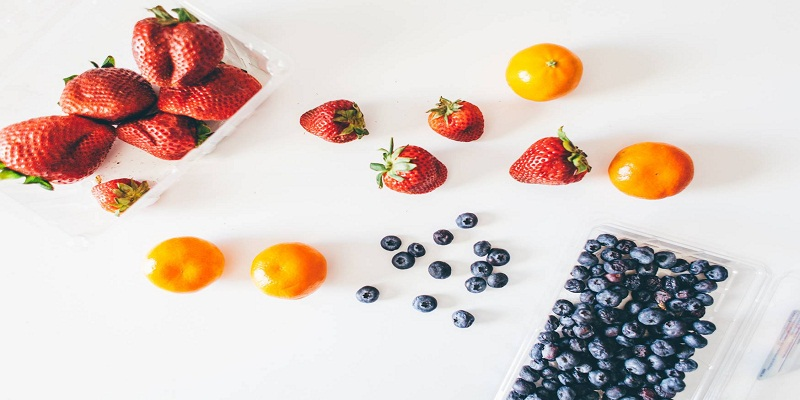

1.每天称重一次
其原因是，减测结果的次数越多，就越能够及时发现引起体重增加的原因，从而更加迅速地对于自己的“过失行为”做出整。
每天早晨要做的第一件事就是称量体重，因为这时你的体重最轻，故称出的结果最准确。你会发现每天的体重都可能存在一些波动，这属于正常现象，但如果体重超过了2%(如果你150磅重，即体重增加了3磅体重)，那就要考虑少吃一些食物了。


2.每天看电视的时间不超过2个小时
躺在沙发上一边看电视，一边吃垃圾食品不但葬送了到户外锻炼的机会，而且还会增肥。研究发现，每天看2个小时电视的人，与每天不足一个小时者相比，多吸收7%的热量并多吃了很多甜食。由此可以看出，看电视的时间越长，所吃垃圾食品的数量就越多，锻炼的时间就越短，如此下去身体能不走形吗?
正确的做法是，多参加一些其他有益于健身的活动，减少与电视接触的机会.并且，将看电视时所吃的垃圾食品换成各种水果，把健身运动与健康食物变成生活的主旋律，彻底改掉看电视的不良习惯。
3.每餐(每天6餐)摄入4克纤维素
富含纤维素的饮食不但能够减少热量的摄入，而且还不会使你有饥饿感。美国的一项研究发现，那些每天纤维素的摄入量低于13克的女性，其发生肥胖症的几率是吃更多纤维素者的5倍。研究人员指出，纤维素之所以能够减肥，是因为富含纤维素的食物需要更长的咀嚼时间;纤维素能够加快排便时间;3)纤维素会提高使人产生饱腹感的激素水平，这些因素都有利于瘦身减脂。
为了保证天摄入4克纤维素，一定要多食用下列食物:葡萄、燕麦片、黑豆、苹果、甘蓝等。

4.多与朋友交流心得
减肥是一项长期的过程，需要朋友的支持与鼓励。研究发现，凡是经常与营养师沟通或者经常参加健身的人，不但减肥效果好，而且更加能够保持减肥成果。
你既可以参加减肥沙龙，也可以参加健身俱乐部，还可以经常到健身房去参加一些集体健身活动。总之，只要经常与身边的健身同伴交流心得，向教练虚心请教，你会得到很大的帮助与支持。
5.每天多走5000步
研究显示，与每天步行超过9000步的人相比，那些步行不足5000步者，平均体重都有不同程度地上升。因此，散步是最简便易行的一种减肥方法。
随身携带一个记步器，以确保每天多行走5千步或者每天多行走50分钟的路程。


6.每个星期作6次健身记录
每天将饮食与锻炼情况记录下来，有助于清楚地掌握饮食与锻炼情况。研究表明，每天都对自己的饮食与健身锻炼做记录的人，在6个月内平均减掉了20磅体重，这几乎是不做记录者减重的2倍。
随身携带一个笔记本或者一个笔记本电脑，将自己的饮食与锻炼情况详细地记录下来，并利用记步器来评估每天所消耗的热量。
7.每晚睡足7个小时以上
睡眠不足者的体内控制食欲的激素水平偏低。因此，睡眠不足是导致肥胖的一个危险因素。美国哥伦比亚大学医学中心的研究也显示，每晚睡眠4个小时或者低于4个小时的女性，患肥胖症的几率增加了234%。
要做到每晚睡眠7-8个小时，就要避免熬夜，并且要养成早睡早起的好习惯;如果患有失眠症，应当及时就医治疗。
